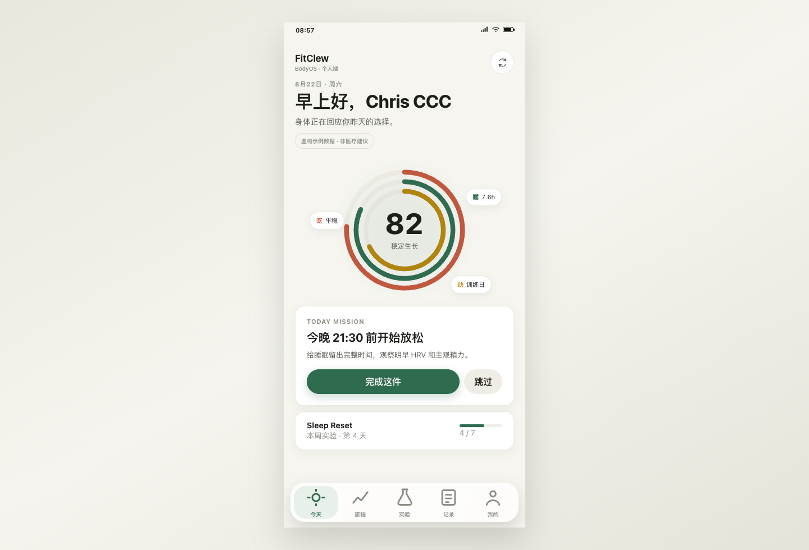
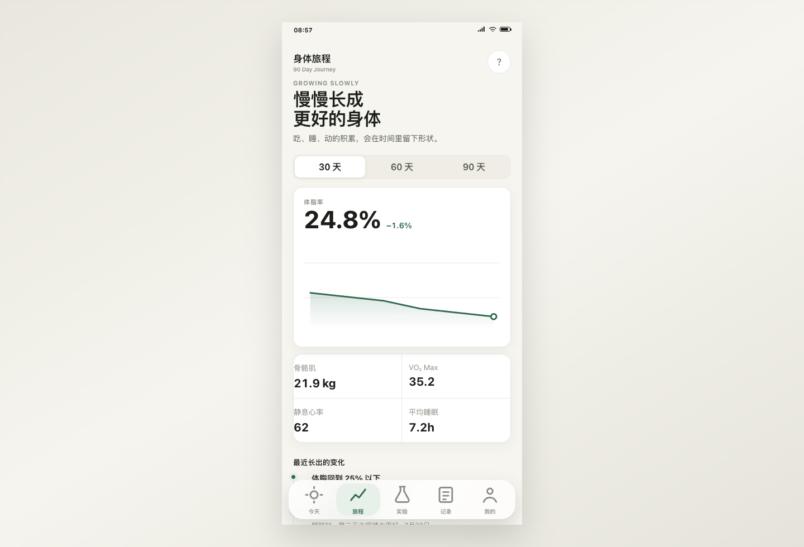
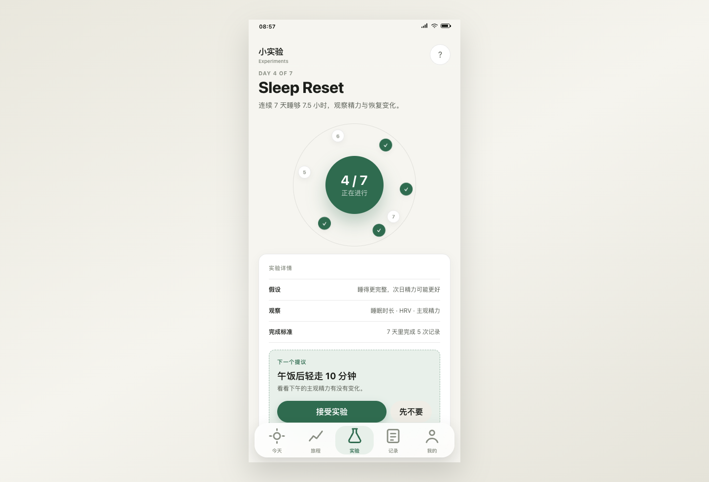
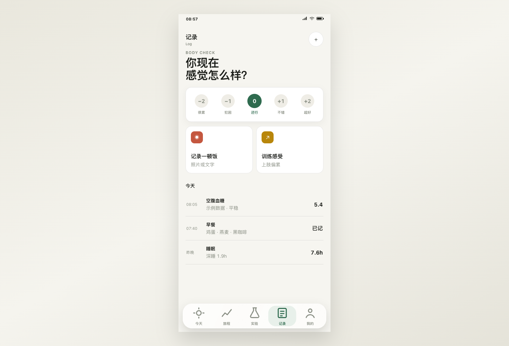
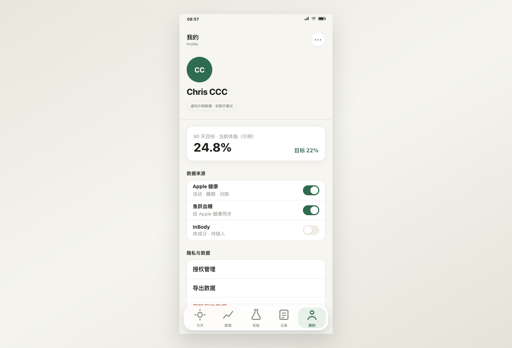

一个 AI 健康实验伙伴，不是一个数据仪表盘
FitClew 的产品骨架是四层时间结构：越靠近"现在"，动作越具体；越靠近"90 天"，认知越结构化。所有判断都来自「AI 提假设 → 用户授权 → 观察 → 验证 → 学习」的实验循环，而不是直接给健康评分。
四层时间结构（数据模型 → 界面的映射）
数据实体 Journey
数据实体 Experiment
数据实体 Mission
短期计算不落第二库
对应五 Tab：今天 = Mission + Right Now ｜ 旅程 = Journey ｜ 实验 = Experiment ｜ 记录 = 主观输入（Body Check / 精力 / 睡眠感受）｜ 我的 = 授权与数据控制
AI Native 主循环
产品红线（写进交互合同的）
| 无数据不生成分数或结论 |
| 不做羞耻、扣分、连续打卡惩罚 |
| 健康判断必须展示数据时间窗、质量和限制 |
| 授权、同步、ClawBot、删除显示真实状态，不做装饰性假开关 |
| 首发排除：餐食照片识别、医疗诊断、模型直读原始健康数据 |
从启动到可用：注册只是第一站，授权才是门槛
全局状态机决定用户看到什么。健康内容在完成 HealthKit 授权前一律不展示——这是与读手表 Insight 最大的结构差异之一（详见 S9 对标）。
启动 → 主页的完整链路
加载中不显示健康数据
→数据用途→授权→首同步→Body Check
行为必须明确
restricted / failed / ready完整
Onboarding 六步可中断可恢复：重启 App 回到最近未完成步骤，已完成步骤不重复。
HealthKit 授权的四种结果与去向
禁止反复逼迫授权
每日行动中心：一个视口，一个判断，一个动作
Today 是全产品的枢纽。它不展示数据海洋，只回答三个问题：我现在什么状态、下一步做什么、为什么。

01页面区块结构（自上而下）
02Mission 写入流（幂等，防重复提交）
成功显示时间与审计确认
说明仍在观察什么 · 关闭不写入
服务端幂等键防重复记录
03四态与 Demo 差距
| 状态 | 用户看到 | 状态 |
|---|---|---|
| ready | 状态 + 时间窗 + 质量 + 下一步 + Why | Demo 仅完整态 |
| baseline_building | 已有输入、缺口、预计时间、低负担行动，不给分数 | Demo 未实现 |
| restricted | 授权限制说明 + 手动记录 + 数据用途入口 | Demo 未实现 |
| failed | 失败归因 + 本地保存状态 + 重试，不用"AI 思考中"掩盖 | Demo 未实现 |
90 天方向感：先看阶段，再看趋势
旅程页回答"我朝我的方向走了多远"。规则：先显示 90 天方向与当前阶段，再展示趋势——顺序不能反。

01区块结构
02硬规则
03Demo 差距
| 部分 | Demo 有趋势视觉与阶段卡，缺 30/60/90 切换的缺口说明联动 |
| 未实现 | 里程碑的撤回/删除状态；点击图表的文字摘要浮层 |
产品的灵魂：假设制实验，授权后才跑
这是 FitClew 与所有健康 App 的本质区别——AI 不直接下结论，而是提案一个可停止的低风险实验，用户授权后才开始观察。

01列表结构：三组
卡片只显示：名称、目的、一句状态、进入详情的动作。完整指标只在详情展示。
02实验状态机
03授权 Sheet 必须可见的四要素
04Demo 差距
| 部分 | 三组列表已有；缺 Proposed 卡片的授权入口与 Sheet 四要素 |
| 未实现 | 暂停/停止的影响确认流；结果页的用户反馈与"确认记忆" |
结构化主观输入：五类，全部可撤回
记录页是 AI 观察数据之外的主观信号源。设计原则：结构化选择优先，不给模型自由文本，默认不存为长期记忆。

01五类记录
| 类型 | 输入 | 成功后 |
|---|---|---|
| 精力 | 五级文字标签 | 保存时间 + 当天撤回入口 |
| 睡眠感受 | 简短选项 + 可选标签 | 结构化保存，不默认成长期记忆 |
| 压力 | 低/中/高 + 可选来源 | 可撤回；无自由文本 |
| 训练感受 | 完成/偏累/恢复良好/暂不记录 | 可关联当日 Mission |
| 不适停止信号 | 明确结构化选择 | 提示停止实验 + 寻求专业帮助边界，不诊断 |
02写入状态机（每一条）
服务端幂等 · 可重试
03Demo 差距
| 已实现 | 情绪选择器（Body Check 雏形）白卡交互 |
| 未实现 | 五类记录的完整入口；撤回流；失败重试态 |
数据主权页：授权、导出、删除、ClawBot
这一页是信任的锚。所有状态真实可见，所有破坏性操作有二次确认和证据回执。

01数据源与授权
02导出 / 删除 / 注销
03微信 ClawBot 连接（六态）
只发送用户明确选择的待办摘要；不发原始健康数值、诊断、自由文本。无官方通道时只显示未连接或 dry-run，不伪称已发送。
04Demo 差距
| 部分 | 页面骨架已有；缺授权明细与 purpose 展示 |
| 未实现 | ClawBot 六态连接流；导出/删除的证据回执 |
微信登录为主，Apple 登录兜底合规，邮箱殿后
Chris 建议：注册用微信。微信登录后天然衔接 ClawBot 待办提醒（发微信提醒今日 Mission）。但 iOS 审核有硬约束：提供第三方登录的 App 通常须同时提供 Sign in with Apple（Guideline 4.8）。
方案 A · 微信优先（建议采纳）
优势：转化路径最短、ClawBot 提醒闭环天然成立、目标用户（健康 App 用户）微信渗透率≈100%。
合规与兜底
登录 → ClawBot 提醒闭环（产品差异点）
同赛道验证了需求，我们的差异在"实验制"
读手表 Insight（insyhealth.com，App Store 4.6 分 200+ 评分）验证了「Apple Watch 数据 AI 解读」的需求真实存在。四模块对照（升级版：完整产品拆解已按 EnglishFlow 框架重做，见 读手表 Insight · 产品拆解）：
| 模块 | 读手表 Insight 的做法 | FitClew 的做法与差异 |
|---|---|---|
| 注册授权 | Apple Health 系统授权为主；官网 FAQ 强调"本地分析、数据是否上传"的隐私问答；登录方式官网未明示 | 微信登录优先（S8）＋ 授权前强制"数据用途说明"（O3）＋ 授权四分支状态机。更重：把授权做成产品能力而非系统弹窗 |
| 数据采集 | HealthKit 读睡眠/心率/HRV/运动/身体成分；Apple Watch 表盘复杂功能（抬腕看电量+压力+恢复） | 同一数据源；首发不做表盘（排期内）。可借鉴：表盘是它最聪明的留存抓手，V1.1 可评估 |
| 数据分析 | 四维度：身体年龄评估 / 睡眠恢复（阶段占比+趋势+异常提示）/ 身体电量 0–100 / HRV 压力曲线 | 不直接给分数结论；以实验制观察（假设→授权→验证）。根本差异：它给答案，我们给验证过程；"身体年龄"锚点指标值得借鉴为 Journey 阶段目标 |
| 数据洞察 | 月度健康画像（30 天节律报告）+ 规律识别（工作日 vs 周末）+ AI 对话式解读 | Journey 页 30/60/90 趋势 + 里程碑 + 实验结果归档。可借鉴：月度画像的报告形态；AI 对话解读在首发排除清单外可排 V1.1 |
| 商业化 | 免费（当日数据）/ Pro（趋势+月度分析）/ Pro Max（个性化方案+预测）；健康币体系；小红书矩阵招募冷启动 | 付费墙未定（今晚议题 Q6）。它的三级分层（当日免费/趋势收费/方案更贵）是健康类验证过的结构 |
它的增长打法（对 Build in Public 的参考）
小红书账号矩阵 30+ 篇招募帖（"急招刚买 S11 的用户""找 iWatch 戴满 3 年的人来挑错"），把冷启动做成了连续剧；"身体年龄 Agent 公测"作为事件节点。FitClew 的 8/24 首篇可以直接借"招募共创"叙事，而不是纯产品介绍。
待决策清单：10 个问题定边界
按优先级排序，每条都直接改变 Demo 下一版的范围。